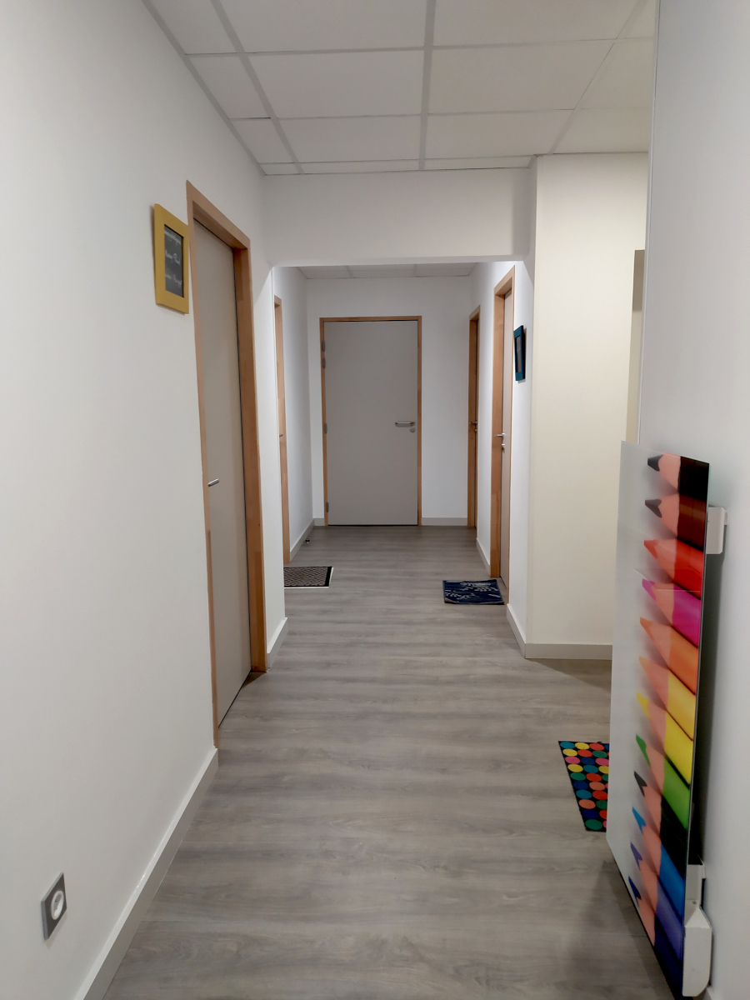
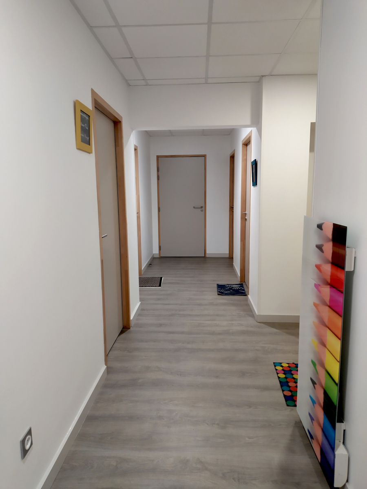

Lynn Bröcker
Neurospychologue
Je suis Lynn Bröcker, psychologue spécialisée en neuropsychologie. Je travaille depuis maintenant 10 ans dans le domaine de l’accompagnement des adultes avec un Trouble du Spectre de l’Autisme (TSA), avec ou sans déficience intellectuelle. Depuis 5 ans ma pratique s’est centrée sur l’accompagnement des adultes, avec un TSA sans déficience, et de leurs proches.
Je suis diplômée du Master 2 en Neuropsychologie Clinique de l’Université de Chambéry et du Diplôme Universitaire de remédiation Neuropsychologique de l’Université de Montpellier.
Au cours de ce 10 dernières années, je me suis formée à l’accompagnement des personnes présentant un TSA, ainsi qu’à son évaluation diagnostique, notamment via le Centre Ressource Austime (CRA-Vinatier-Lyon). Je suis également formée aux techniques de l’entretien motivationnel.
Pour qui ?
L’accompagnement que je propose s’adresse aux adultes avec un Trouble du Spectre de l’Autisme sans déficience intellectuelle se questionnant sur leur de mode de fonctionnement lié à leurs TSA ainsi qu’aux autres modes de fonctionnement et/ou troubles qui pourraient y être associés (psychoéducation).
L’accompagnement peut également se centrer sur le vécu émotionnel et la gestion de l’anxiété, les difficultés rencontrées dans les relations aux autres, sur des techniques de gestion de l’énergie et de la fatigue, la sphère sensorielle, les adaptations et aménagements dans le quotidien.
Si vous en éprouvez le besoin je peux également vous proposer des séances en présence de vos proches (ami.e.s, membres de votre famille). L’accompagnement peut également avoir lieu avec d’autres personnes concernées par le mode de fonctionnement TSA (accompagnement en groupe).
Aide au diagnostic
Si vous vous questionnez sur votre mode de fonctionnement et suspectez un Trouble du Spectre de l’Autisme, nous pouvons également nous rencontrer dans le cadre d’une démarche d’évaluation d’aide au diagnostic.
Consultations
Nous prendrons le temps de définir votre demande et votre souhait d’accompagnement et ce dans un cadre bienveillant, confidentiel et en prenant en compte votre mode de fonctionnement et vos particularités sensorielles.
Consultation individuelle
Une séance dure 60 minutes, et peut avoir lieu au cabinet ou en visio. L’accompagnement peut être individuel ou en présence d’un.e ou de proche.s. La fréquence des rendez-vous sera adaptée à vos besoins. L’arrêt de l’accompagnement pourra se faire quand vous le souhaitez.
Consultation en groupe
Je propose également des séances en groupes, de 3 à 4 personnes. Les thématiques sont traitées sur 3 à 6 séances. Chaque séance dure 90 minutes.
- Mieux comprendre mon TSA,
- La gestion de mon énergie,
- Les spécificités des profils TSA féminins.
À propos des séances
Les règlements se font en espèce ou chèque.
Si vous rencontrez des difficultés socio-économiques et que cette somme est trop importante nous pourrons en échanger et convenir d’un tarif plus adapté à votre situation actuelle.
Les séances peuvent être annulées ou déplacées jusqu’à 48h à l’avance. Ce délai me permet de proposer ce créneau à d’autres personnes. Hormis une situation non anticipable, si ce délai n’est pas respecté la séance sera due.
Le coût des séances n’est pas pris en charge par la sécurité sociale mais certaines mutuelles peuvent remboursées de manière partielle ou totale les séances. Je vous laisserai le soin de vous renseigner auprès de votre mutuelle.
Évaluations
Je propose des évaluations d’aide au diagnostic du Trouble du Spectre de l’Autisme pour les adultes :
Entretien avec évaluation de la demande et recueil d’informations cliniques
Réalisation de l’ADI (Autism Diagnostic Interview)
Evaluation clinique (ASDI : Asperger Syndrome Diagnostic Interview ou QEF : Questionnaire d’Evaluation clinique de la Femme)
À propos des séances
Le prix indiqué englobe les différentes séances, l’analyse et la cotation des différentes échelles et questionnaires, la rédaction du compte rendu et sa restitution. Le diagnostic de Trouble de l’Autisme est un diagnostic médical et devra être validé par un.e médecin psychiatre.
Me contacter
Lynn Bröckerbrocker.lynn@protonmail.com
Téléphone : +33 4 79 89 76 00
Adresse : 8 rue Alphonse Terray,
38000 Grenoble
Pour me contacter vous pouvez passer par un appel téléphonique, par mail ou par SMS aux coordonnées ci-dessous, en indiquant, si vous le pouvez le motif de votre demande. Merci de m’indiquer dans votre message ou mail, si vous souhaitez être recontacté.e par ce même moyen de communication.
En cas d'urgence
- Samu : 15 (numéro d’urgence médicale)
- Numéro national de prévention du suicide : 31 14
- Numéro national pour les femmes victimes de violences sexistes et sexuelles : 3919 (violence femme info)
- Numéro national pour les femmes avec un handicap victimes de violences sexistes ou sexuelles : 01 40 47 06 06 (Écoute Violences Femmes Handicapées)
Le cabinet
Le cabinet de Lynn Bröcker est accessible à tous les membres de l'équipe de recherche du CNRS au laboratoire de neuropsychologie de l'université de Montréal. Pour accéder au cabinet, vous pouvez utiliser le lien ci-dessous.
 

Offre de formation
Dans le cadre de ma pratique, je propose également de la sensibilisation et de l’information aux professionnel.le.s, du secteur du médico-social et du sanitaire, à la connaissance du Trouble du Spectre de l’Autisme et à ses spécificités d’accompagnement, ainsi qu’aux spécificités des profils de personnes avec TSA sociabilisées femme.
Vous trouverez le détail des formations dans la plaquette ci-dessous :
Formations sensibilisation et accompagnement TSA